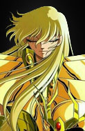

escolha seu cavaleiro
-

- 
-

Mu-de-Áries
Mu de Áries é um cavaleiro nobre e protetor, conhecido por sua lealdade inabalável. Com sua armadura dourada e seus poderes cósmicos, ele é um defensor implacável da justiça e um mestre na manipulação da energia estelar.